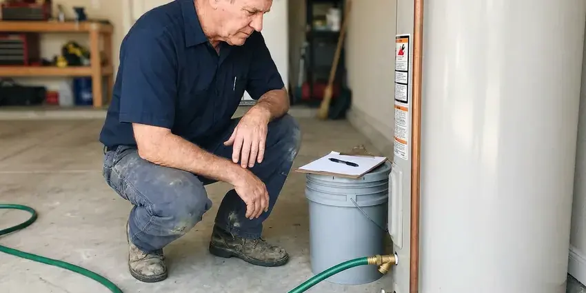
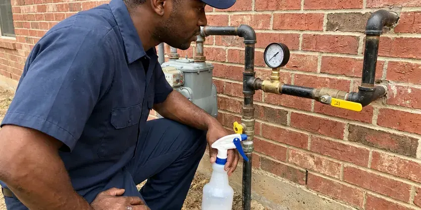
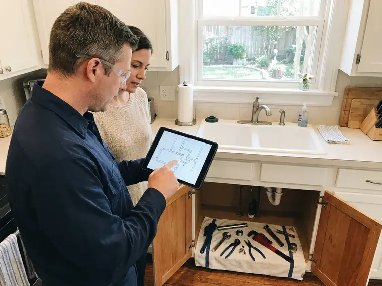
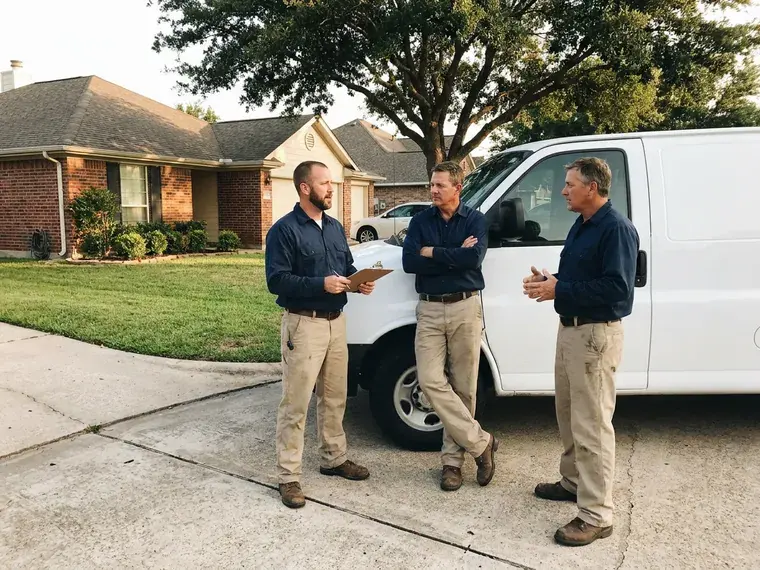
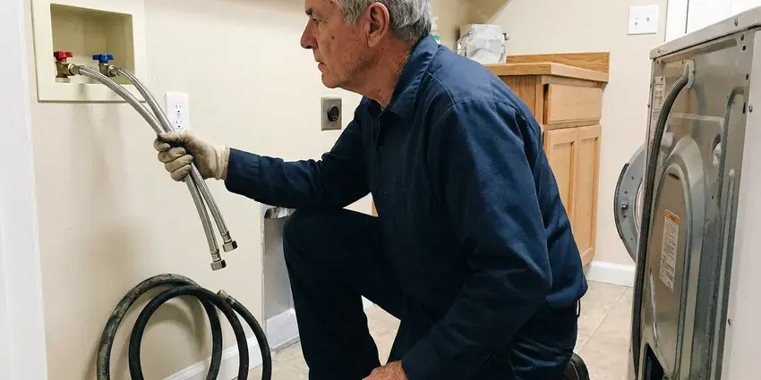
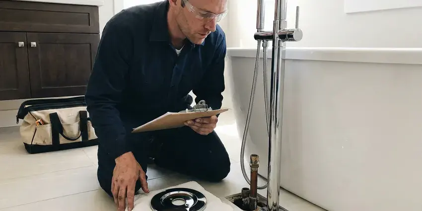
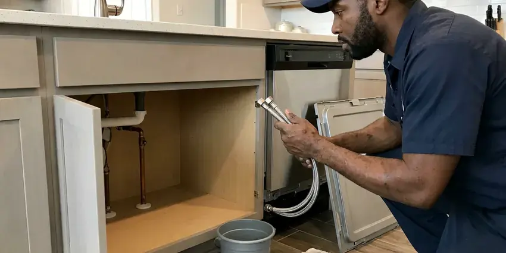
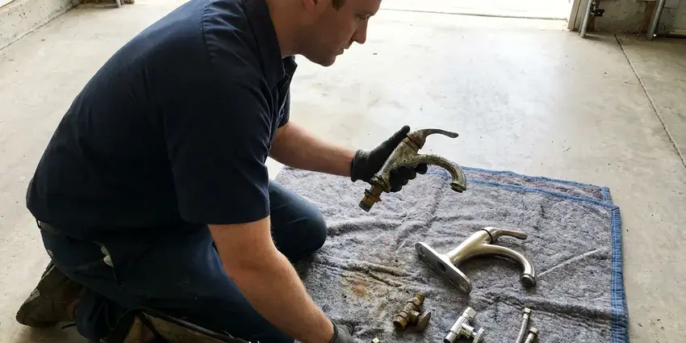

Residential Plumbing Service in Murray, UT
Dripping faucet, running toilet or a water heater that quit overnight? BPK Plumbing sends licensed plumbers to homes in Murray, UT with stocked trucks.
- Same-Day Home Repairs
- Written Pricing Up Front
- Stocked Service Trucks
- Shoe Covers and Drop Cloths

Fix the Drip Before It Gets Worse in Murray, UT.
Flat pricing, no hourly meter running.
Residential Plumbing for Kitchens, Baths, Basements and Garages in Murray, UT
BPK Plumbing covers faucet cartridges, toilet rebuilds, water heater swaps, gas lines and whole-house repipes. We keep Moen, Delta and Kohler repair parts on board, plus copper sweat fittings and PEX rings. Not every part is on the truck. An odd part usually comes from the supply house the same afternoon.
Some of what we do:
- Tank and tankless water heater replacement.
- Drain cleaning by hand auger or jetter.
- Faucet, toilet, shower valve and disposal repair

Additional Plumbing Maintenance Services in Murray, UT
Our maintenance and specialty plumbing services in Murray, UT protect your home year-round and extend the life of every system.


Murray water heater maintenance specialists



Gas Line Repair in Murray

Customers
Why Choose BPK Plumbing for Residential Plumbing Service in Murray, UT?
Houses in Utah deal with their own mix of water and pipe problems. Hard water scales up heater tanks and cartridges in some areas, and aging galvanized or polybutylene lines show up in others, so our plumbers check what you have before recommending anything. Pipe type changes the answer.
- Respect Your Home, We put down drop cloths and wear shoe covers, and we clean up before leaving.
- Fast Response, We hold same-day slots most days, and emergencies jump the line.
- Clear Communication, You see the bad part in hand and explain the fix in plain words.
Citywide Coverage
From one end of Murray to the other, BPK Plumbing takes calls daily. Leaks do not wait for a convenient day, so we keep slots open for same-day work and send a plumber from whatever part of Murray is nearest to your address. Same-day slots are often available.
Experienced Team
Each technician handles repair and installation work. You rarely need a second specialist, because the same plumber who diagnoses your water heater can also run the gas line, swap the shutoff and set the expansion tank in one visit. That range comes from thousands of house calls.
Safety-First Approach
Permits get pulled where state and local codes call for them, such as water heater swaps and gas line work. Everything is built to pass the inspection the first time. Failed inspections cost you time.
Trusted Certified Murray Plumbing Services Professionals
At BPK Plumbing, we are proud to offer certified plumbing services throughout Murray, UT. Those papers on the wall mean something. Our plumbers hold recognized industry credentials, and they follow strict safety and quality rules on every repair, installation and maintenance call we run.
Call Us Now PHCC Plumbing Contractor Recognition
PHCC Plumbing Contractor Recognition Better Business Bureau (BBB) Accreditation
Better Business Bureau (BBB) Accreditation Angi Certified Pro
Angi Certified Pro ISO 9001 Quality Management Certification
ISO 9001 Quality Management CertificationHouse Plumbing Repairs We Handle in Murray, UT
Gas Lines for New Appliances in Murray, UT
Switching from an electric range to gas means a new line and a shutoff. Pipe size is figured from the BTU load, run it in black iron or CSST, bond it where the code requires and pressure-test before the gas company or inspector signs off on the work. Then we light it and check the flame.

Water Softener and Filtration Service in Murray
Water softeners are a common fixture in Utah homes, and many newer houses are built with a softener loop already in place. Scale shows up first as white crust on faucet aerators and a rumbling water heater. We install and service softeners and whole-house filters from brands like Kinetico and Pelican, sized from a hardness test we run at your kitchen sink, not a guess. Then we set the regeneration schedule.
Sump Pumps and Basement Drainage in Murray
A sump pump only gets tested when it rains hard. Our plumbers swap failing pumps for cast iron submersibles and replace stuck floats and check valves, and we can add a battery backup so the pit keeps draining when the power goes out in a storm. Pour a bucket in to test it.
Faucet and Fixture Repair in Murray
Most dripping faucets need a cartridge, not a new faucet. We carry cartridges for Moen, Delta, Kohler and Pfister, and when you do want new fixtures we install them, connect new braided supply lines, and check the angle stops under the sink while we are there. Old stops fail when touched.
Toilet Repair and Replacement in Murray
A running toilet can waste a couple hundred gallons a day. Most fixes are a flapper, a fill valve or a new wax ring, and when the bowl is cracked or the toilet is older than the last bathroom remodel, we set a new water-saving model and level it on the flange. Rocking toilets get shimmed and caulked.
Drain Cleaning and Main Line Clogs in Murray
Slow drains in more than one fixture point to the main line. A single slow sink is usually a trap or branch clog, but when the tub gurgles as the washer drains, the blockage is further out and needs a machine cable or a jetter run from the cleanout. Older clay and cast iron lines often have roots.
Drain Cleaning and Clog Clearing in Murray, UT
Grease is the big one in kitchen lines. In bathrooms it is hair wrapped in soap scum, and we clear both with hand augers, sectional cable machines or a hydro jetter, depending on how far down the blockage sits and what the pipe is made of. When a clog keeps coming back, we run a camera to look for roots or a cracked hub.

Leak Detection and Repair in Murray, UT
Water stains on a ceiling rarely sit right under the leak. Soils in Utah vary from clay that swells when wet to rocky benches and collapsible soils that settle when they take on water. We trace leaks with acoustic sensors, thermal imaging and isolation pressure tests, which lets us open one small hole in the right spot instead of cutting drywall all over the house. The repair usually happens the same visit.
Residential Plumbing Service Near You in Murray, UT
Working the same area for years teaches you its water and its houses. We have seen what scale does to heater tanks here, and what ground movement does to supply lines under a slab, so the diagnosis is faster and the price is fair. Often the fix is one part.
Searching for a residential plumbing service near me in Murray, UT should turn up someone who can actually get to you today. BPK Plumbing has plumbers in Murray every day, so the drive is usually short, and the trucks carry the parts local homes go through most often, from cartridges to wax rings. Less windshield time means more time on your repair.
BPK Plumbing at a Glance
- Fully licensed plumbing team covering Murray, UT
- 24/7 emergency service with same-day scheduling
- Clear written estimates, no hidden fees
- 4.8-star rated by 470+ Utah customers
Murray Map
Murray Information
- Population
- 49,553
- Area codes
- 801/385/435
- Service area
- Murray and communities within 40 miles
- Nearby
- Taylorsville, Millcreek, Sandy, West Jordan
Most house calls in Murray, UT come down to a tired toilet flapper or a leak nobody has found yet, and a licensed plumber can usually sort it out in one visit.
Talk to a Plumber
Call BPK Plumbing for honest, reliable plumbing from people who know the trade in Murray, UT.
Our Specialized Plumbing Services in Murray, UT
At BPK Plumbing, we handle the full list of plumbing services across Murray, UT. From leak detection to full system installs, our team works fast and charges fair prices on homes and commercial properties alike. Explore our core services below:

Plumbing Repair service for Murray homeowners

Professional bathroom plumbing, Murray

Kitchen Plumbing service for Murray homeowners

Plumbing Replacement near Murray

What to Expect From a Home Plumbing Call in Murray, UT
From the first phone call to the cleanup, a residential plumbing visit in Murray breaks down into a few steps.
Request a Quote
Call (385) 543-4073 and tell us what is going on. You get a time window for the plumber's arrival.
Diagnose and Price
Your plumber finds the cause and gives you a flat price in writing. Nothing starts until you approve it.
Repair and Clean Up
We fix it, test it and clean the work area. You get a warranty and a tip or two on preventing a repeat.
Frequently Asked Questions About Residential Plumbing Service in Murray
Small repairs in Murray typically cost $150 to $300. A main line clog or a new water heater falls more in the $400 to $1,500 range, sometimes higher. We quote after we look. You get it in writing, and it only changes if you approve.
Swapping a showerhead or a toilet flapper is fine for most people. Gas lines, water heaters and anything behind a wall belong with a licensed plumber, for safety and because those jobs usually need a permit and an inspection that a homeowner repair can fail. Plumber's tape will not fix a gas leak.
Every one to two years works for most homes in Murray, UT. The inspection usually runs about an hour, and we check pressure, look for slow leaks at shutoffs and supply lines, test the water heater relief valve and look for corrosion on exposed pipe. Problems found early stay cheap.
One to two hours covers many repairs. A water heater install takes about half a day, and a whole-house repipe runs a few days, with the water turned back on each evening so the family can shower and cook. The schedule is set before we start.
Emergencies go to the top of the board. Our goal is a licensed plumber at your door within a few hours, and for a burst pipe or sewage backup we will walk you through closing the main shutoff on the phone so the damage stops while we drive. Keep towels ready.
Moen, Delta, Kohler, American Standard, Pfister and TOTO make up most of our installs. We can also install a fixture you already bought, as long as it is a complete unit with the right connections, and we will check the box before the appointment so nothing is missing when we arrive. Bring the receipt.
Our plumbers install and service Moen, Delta, Kohler, American Standard, TOTO, Rheem, Bradford White and Navien, among others. We will tell you which ones hold up in your water, since cartridges in some brands handle hard water better than others. Some cost more but last longer.
Two leaks in a year is the tipping point for most homes. Polybutylene and galvanized pipe also tilt the answer toward a repipe, since patching one spot on a failing system just moves the next leak a few feet down the line. You get both prices side by side.
Hear From Customers Who Hired Our Plumbing Experts

Daniel K.
A pipe burst in the garage ceiling at 11 at night. Someone answered on the second ring, and the plumber was in my driveway about fifty minutes later. He shut off the main, cut out the split section, and had water back on before 2 am.
Emergency Plumbing · Taylorsville, UTMark T.
The floor drain in our office break room backed up every few weeks. The plumber ran a cable, then put a camera down and found roots at a joint about thirty feet out. Seeing it on the screen made the decision easy.
Drain Cleaning · Taylorsville, UTNathan E.
Our tankless heater kept throwing an error code and shutting off mid shower. The tech flushed the heat exchanger, which was full of scale, and replaced a bad flow sensor. Hot water has been steady for half a year now.
Water Heater Repair · West Valley City, UT
Patricia H.
We had a slab leak that two other companies could not find. BPK Plumbing located it in under an hour with a listening device. They rerouted the line through the attic instead of breaking up the floor, so we kept our kitchen tile.
Slab Leak Repair · Murray, UTKevin O.
Before buying our house I paid for a sewer camera inspection. BPK Plumbing found a belly in the line that held standing water about forty feet from the cleanout. We used the video to get the sellers to fix it before closing.
Sewer Camera Inspection · South Jordan, UTTyler J.
We bought a taller comfort height toilet for my dad, who just had knee surgery. The plumber pulled the old one, found the flange was cracked, and replaced it before setting the new bowl. Took about two hours.
Toilet Installation · Millcreek, UT